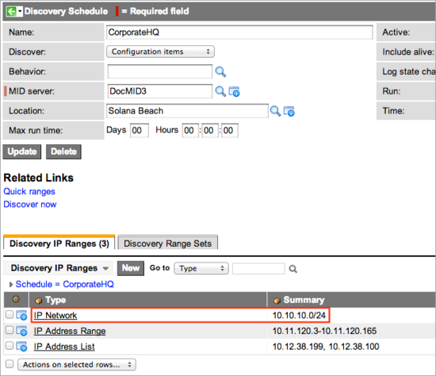
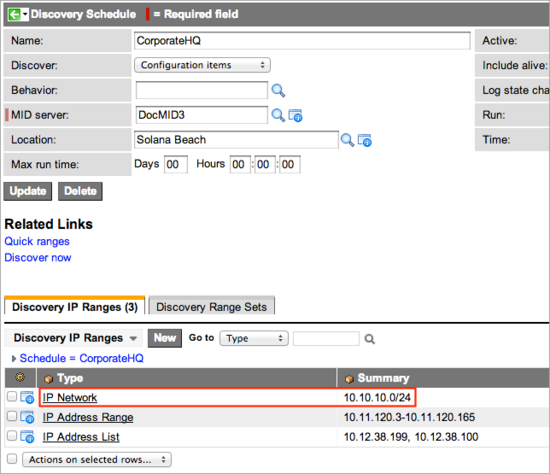
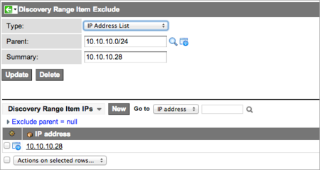

Embedded:Configuring IP Addresses in Discovery
Contents
1 Configuring IP Addresses
You can select the IP address you want to discover by using the following formats:
- IP address list
- IP address range
- IP network
Use one or more of these methods in any combination to define the network or network segment for Discovery to query.
| |
Note: If you do not know the IP addresses in the network, run network discovery first to determine the IP networks. Then, convert the IP networks into IP address range sets. |
1.1 IP Address List
Use IP address lists to add individual addresses for Discovery to query that are not included in any range or network specified. You can enter the IP address of the device or a host name (DNS name). If you enter a host name, it must be resolvable from the ServiceNow instance.
1.2 IP Address Range
You can define arbitrary ranges of IP addresses for Discovery to query. This is a good way to include selected segments of a network or subnet, but you must ensure that you include only the addresses of single, manageable devices in the network. Discovery has no way of knowing if the network or broadcast addresses are included in the range, and so must ping all the addresses in the range. If the network and broadcast addresses are included, then the results are inaccurate. For this reason, discoveries configured to detect IP networks are generally more accurate than those configured for IP address ranges.
1.3 IP Network
An IP network includes the range of available IP addresses in that network, including the network address (the lowest address in the range) and the broadcast address (the highest address in the range). An example of a class C network range is 192.168.0.0 to 192.168.0.255. In the Range Set form, this network can be entered with either of the following notations:
- 192.168.0.0/24
- 192.168.0.1/255.255.255.0
This notation indicates that Discovery is scanning an IP network, and Discovery does not scan the highest and lowest numbers in the range. This prevents significant errors from being introduced into the Discovery data by the broadcast address, which returns all the devices in the network, and the network address, which can add an arbitrary number of redundant devices. This built-in control makes IP networks the best method of defining which IP address ranges to query.
1.4 Quick Ranges Feature
Quick ranges allow administrators to define IP addresses to scan in a single comma-delimited string without creating separate records. You can enter IP addresses in one of the following formats:
- An IP range defined by a slash and the number of bits in the subnetwork. For example, the string 10.10.10.0/24 scans 24 bits of IP addresses from 10.10.10.0 to 10.10.10.254.
- An IP range defined by a dash. For example, the string 10.10.11.0-10.10.11.165 scans the IP addresses from 10.10.11.0 to 10.10.11.165.
- A specific IP address. For example the string 10.10.11.200,10.10.11.235 scans the IP addresses 10.10.11.200 and 10.10.11.235.
To create quick ranges:
- Click the Quick Ranges related link on the Discovery Schedule form.
- Enter the IP ranges and specific IP addresses to scan.
- Click Make Ranges.
| |
Note: The Quick Range interface is for entering IP addresses only and cannot be used to edit IP addresses that have already been submitted. |

The instance automatically displays the entries in the proper format. To make any changes to IP address ranges, select the IP address records.

| Versions prior to Calgary | ||
|---|---|---|
|
To create IP address ranges, networks, and lists quickly, click the Quick Ranges link under Related Links. This feature enables an administrator to define IP addresses to scan by entering all three formats in a single, comma-delimited string. For example, enter 10.10.10.0/24,10.10.11.0-10.10.11.165,10.10.11.200,10.10.11.235 to scan addresses in a network, a range, and a list without having to create three separate records.
When the Quick Ranges definitions are submitted, the instance automatically displays each in the proper format. To make any changes to the IP address ranges, drill into these records. |
1.5 Excluding IP Addresses
Administrators can exclude specific IP addresses in a range or network from a Discovery Schedule. You might exclude IP addresses, for example, if a subnet contains critical-use devices where a local policy prevents interacting with the devices. Another example of a device that might be excluded is one with an intentionally unorthodox configuration that causes an authentication issue each time it is discovered.
To exclude an IP address:
- In the Discovery Schedule form, click the link for the Type of IP address range that contains the address to exclude. For example, to exclude 10.10.10.28, select the IP Network for 10.10.10.0/24, which is the range of IP addresses that contains the target address.
- 
- The Discovery IP Range form appears.

- 
- In the Discovery Range Item Excludes related list, click New.
- In the Discovery Range Item Exclude form, select a Type for the excluded IPs. For example, select IP Address List to exclude a single IP address or multiple IP addresses that are not sequential.
- Right-click the header bar and select Save from the context menu.
- The Discovery Range Item IPs related list appears.

- Click New in this list.
- An entry form for the IP addresses to exclude appears.
- Enter a single IP address to exclude or multiple addresses separated by commas, and then click Submit.

- The excluded IP address appears in the Discovery Range Item IPs related list for that IP address Type.
- 
- Click Update to save the excluded address and return to the Discovery Schedule.


{kind=link}
{kind=link}
{kind=link}
{kind=link}
| Versions prior to Calgary |
|---|
|
Specific IP addresses in a range or network might need to be excluded from an established Discovery Schedule. This is necessary if a subnet contains critical-use devices that cannot be discovered due to a local policy that prevents interacting with those devices. An example of a device that might be excluded is one with an intentionally unorthodox configuration that causes an authentication issue each time it is discovered.
|
{kind=link}
{kind=link}
{kind=link}
{kind=link}
{kind=link}